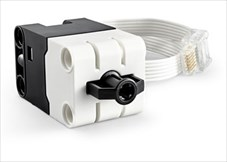

Introduction#

In this course you will be using three integrated technologies.
LEGO Spike Prime: the hardware ie. the robot components.
Pybricks: the software, both the software running on the robot, and the IDE
Python: the language you will be programming in.
These all work together seamlessly, so you will barely recognise that you are using different technologies.
Pybricks
Pybricks is in OpenSource Python platform for smart LEGO hubs.
We have replaced the standard LEGO Spike firmware (the code that runs the robot) with Pybricks’ firmware. The advantage is that Pybricks is better at running Python. The disadvantage is that you can no longer use the LEGO Spike App to program the robot.
Pybricks IDE#
You will be using the Pybricks IDE to program the robot. You can use the IDE in the browser or you can install it as an app on your computer.
To access the Pybricks IDE goto:
If this is the first time you have visited code.pybricks.com you should be offered to take a Welcome Tour, go ahead an take it (if this option didn’t show up, just click on the link on the lefthand menu).
Since your robot already has the Pybricks Firmware installed, you can go strait to connecting to the robot.
Connect Robot#
You can connect to the robot by either using a USB cable or Bluetooth. Bluetooth is more convenient, so you will use that.
To connect using Bluetooth:
press and hold the power button on the robot (the big one)
the hub should light up nine squares and the power button should be flashing blue.
Click the Bluetooth button on the Pybricks IDE
Choose your robot name from the pop-up list (the name is on the front of your robot)
Click Pair
the hub power button should be solid blue, indicating a successful connection
You will be using the Lego Spike App 3 to program our robot, so the first thing you need to do is install the App.
To do this:
go to the LEGO Education SPIKE App download
choose your operating system (Windows 11 users choose Windows 10)
click the Download button
run the downloaded file and keep clicking next to install the app
when the app is installed it should automatically start
Creating Python Files#
Once we are in the app, there are a few steps to accessing the Python coding environment.
In the Select you Spike solution page, choose the Spike Prime option.
There are some steps you will only need to do the first time
Click Got it on the next screen
Click DON’T SHOW ME THIS AGAIN on the next screen, then click the X
Click the settings cog icon
 at the bottom lefthand corner of the window.
at the bottom lefthand corner of the window.Choose General and then click the Enable Python projects toggle.
Finally, click the home icon

Click New Project
Give your project a name (First Program), click Python and then click CREATE

Finally we will delete all the code that has been prewritten for us. Hold Ctrl + A (command + A on macs) and then delete.
Connect to Robot#
You will use Bluetooth to connect to your robot.
Click the yellow Connect icon in the top left of the screen
Turn you robot on by pressing and briefly holding the power button
Then click on Green already updated

Follow the instruction to turn on Bluetooth
Connect to your robot by choosing it’s name from the list
Check Configuration#
Your robot has three sensors modules and two motors modules connected.
Module |
Port |
Purpose |
Image |
|---|---|---|---|
Ultrasonic Sensor |
C |
Detect the distance to object in front |
|
Force Sensor |
F |
Detect the amount of pressure applied |
 |
Colour Sensor |
D |
Detect the colour of an object, or the amount of light reflected |
|
Motor |
A B |
Turns in response to commands from hub |


To successfully follow these tutorials, you need to make sure that they are all connected to the correct hub ports.
To check the port that modules are connected to, look at the top of the screen beside the connection icon. Make sure that each module is connected to the correct port. It should look like the image below.

First Program#
Our final check is for you to run your first program.